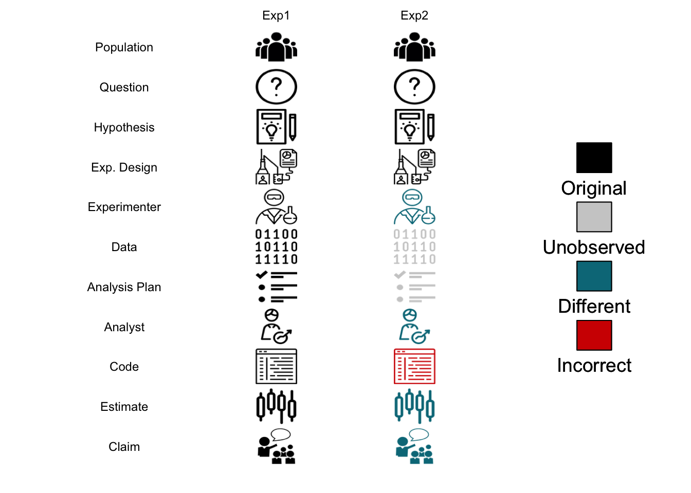

坑 3 科研现状概览
3.1 问题为导向
现代科研隶属于现代政治经济系统，满足社会的需求是其存在的基础，至于是否满足个人兴趣爱好与远大理想，可认为是副产品。当然，这是从社会层面说，具体到个人千差万别。
首先，我们要了解现代社会运行的基本模式，其中陌生人大尺度分工协作是现代社会最突出的特色。社会，简单说就是一群人而不是一个人生存的行为与知识模式集合。相比宗族或家庭为单位的原始聚居，古代与近代社会的发展不断突破着人们行为与知识范围的地理与血缘限制。
在原始聚居条件下，人们终生活动范围有限，语言隔阂等也限制了信息交流，好的生存模式很难传递到下一代或更远的地方，短暂的寿命基本都用在维持生存繁衍上了。当然，对原始部落的研究发现生活在其中的人并不比焦虑的现代人的快乐感受更少，但生活的自由度其实很有限（从另一方面讲，如果完全意识不到当今生活自由度可以改变其实也是一种内在幸福感，拥有更大自由度的人并不能完全体会到）。这种狩猎采集的原始聚居其实并不太需要共同的社会行为规则，但后来人们驯化了农作物与牲畜（其实很难讲谁驯化了谁，作物与牲畜也可能通过驯化更好的传播了基因），进而从流动走向了定居。
定居后的社会出现了更细致的分工，例如一个村落需要祭祀、防卫、生产、医疗等部门维持生存结构，这种分工有着自己的生命力，一旦产生会让整体受益，同时也会让这种结构加强。同样的，这种分工模式并不惟一，但如果两个定居的社会共同体产生利益矛盾，最后剩下来的总是一种更有利群体生存的模式，这个模式下的规则并无道德可言，或者说这就是社会道德的起源。这同时也是一个路径依赖的过程，总会带有一些副产品，很多时候我们就是通过副产品来回溯过去。如同对进化过程的研究一致，使用幸存者就是最好的或最合理的逻辑是不恰当的，我们需要通过回溯来发现一些制度历史上的合理性与偶然性，逻辑自洽并不代表历史真相，这点对科研认识也是很重要的。然而，这个阶段的社会政治经济体制依然很大程度被自然条件所控制，多数规则要么偏向农业社会，要么偏向海洋经济，人类的视野逐渐开阔，但基于血缘与地域的多样化依然可以保留，直到更追求效率的技术与体制规则进一步交互作用，孕育出近代工业社会。
近代工业社会将分工与效率推向了极致，影响的范围从多个国家推广到了全球。伴随而来的就是一套基本抛弃血缘关系与多样性的陌生人交流法则，地理限制被信息技术与交通技术打破，所有国家都会遵循同样的工业标准，语言也尽可能一致，法律也会去遵循共通的法则。科学研究在这个过程中起了很重要的作用，而工业化也不断向科研提出需求，此时科学研究从精英们的兴趣爱好变成了巨大的财富来源，每一次技术革新都服务了社会，而几乎所有的社会经济体都会拿出资金支持科研。务实一点的国家或企业会对工程学优先发展，而对自然科学的支持则颇有情怀意味，毕竟一旦经济下滑，最先拿不到钱的都是基础科研等见效慢的学科。这种社会整体的功利主义自产生之时就展示了巨大的生命力，甚至不断影响了社会中个体的决策行为。
时至今日，现代社会基本延续了工业社会对分工与效率的追求，但维持文化多样性与个体-社会相互关系的思考不断涌现。现代社会塑造了个体认知，个体认知却反过来反思现代社会的诸多问题例如民族主义的崛起、环境保护、气候变化、社会隔离与歧视、机会公平、人口老龄化、战争暴力、谣言传播、经济危机、金融危机、人工智能等。这些问题的根源有相当比例是社会政治经济体制的构建过程出现了漏洞，而今的科技发展把一些问题放大了，或者说这个系统需要打补丁了。毋庸置疑，科研对于现实问题的解决是一个靠谱的选择，其他选择例如宗教、回归原始生活更多的是一种消极的保守策略，选择那些方法并不会真的解决问题。这样如果给科研立块大牌坊，我想最好的题词就是从方法论层面解决社会问题。换言之，科研总是面向问题解决问题的一个社会分工，是一个职业，既不神圣也不低俗，从事这个职业的人总在用科学方法论解决实际问题，有时候也是揭示问题或为问题找一个解释。这个需求是根源，也就是说如果你科研自认为做的不错但跟现实脱节，那么即使留在象牙塔，也会面临自我认同与社会认同不协调的困境，需要你有额外的资源平衡。
放到经济视角下，这个职业也是有温饱小康问题的，也是一个利益集团，需要人代表到国会或人大去抢财政的分配，还要跟不同学科去抢所有的科研分配，充满了复杂的博弈过程，原来是陌生人之间，以后可能会发展到人跟机器或规则之间。这个职业有光环，但退却光环都是一个个为生计奔波劳碌的现代人，当然，不同人有着不同的生计标准。
3.2 专业性与综合性的矛盾
IT领域有一种职业叫做全栈工程师，指那种运用多领域知识完成产品的工作类型。最近发生的一些事让我越来越觉得科研领域也需要类似的概念，姑且就叫全栈科学家吧。
国内研究生培养的一个短板就是综合性不强，或者说科研民工，走出自己专业就不太敢想了，国外的研究生则对不懂的部分也有自信，最终能攒出一个结果，而这个结果可能要同时用到电子工程、材料、分析化学、机械及数据分析等多个方面的技术，即使没学过，他们也会通过学校找到合作的人。反观国内，研究生选课都很保守，不是自己以后研究领域的东西不选或直接让导师选，国外也会这样，但真遇到需要跨学科解决的问题从导师到学生都会想办法而不是觉得这东西不是我的领域就不研究了。打比方我设计一个算法，效果不错，但问题是别人不会用，那么就应该把算法打包成函数甚至设计一个简易图形界面让明白用途但不想理解算法的人用。但这个过程就不能靠分工了，得有人全流程都明白并进行整合，这种综合性有点类似工程师思维，甲方是同行，你得让同行解决实际问题而不是看你炫技术。基础学科肯定是有发展空间的，但目前基础学科要解决的问题已经都很像工程问题了，所以这类综合能力的问题化聚焦是实验学科研究生很重要的竞争力，痴迷于单一技术而看不到要实际解决的科学问题培养的只能是专家而不是科学家。
很多人觉得大学负责通识教育与精英教育，研究生要更多关注技能培训成为所谓专家，我觉得这可能是科研民工思想的源头。现状可能却是通识教育与精英教育从来都不如技能培训有吸引力，虽然可能潜力更高，这导致培养出的专家视野总是有局限性，需要在团队里合理配置才会提高解决问题的效率。例如想成为生物医药领域pi的研究生博后要在10年内搞出8篇一作才有戏，而H指数预测性很差，业界可拿这个数据到学术圈挖人。越来越长时间的专家培养是不可避免的趋势。
不过专家在团队里并不总是起正面效用，分工促进效率在面对可分解为具体步骤的行业或学科是好使的，但面对真实问题例如实验研究，实验者与数据处理者是不能脱节的。这里团队中指望两拨人放下成见平等交谈是很不现实的，因为占据理论高度的数据处理者或者说统计学家总会觉得做实验的是啥都不懂的。不过你不可能不湿鞋就过河，不了解实验具体操作就在那边对实验设计指指点点只会让实验者与统计学家的隔阂越来越大。所以我觉得解决实际问题需要培养全栈科学家，就是那种从采样到样品分析再到数据分析都有概念的科学家，即使以后实验可以外包也必须要进行所谓脏活的训练，数据科学家需要洗数据，全栈科学家可能连样品都要亲自采集，纸上谈兵绝对不行，养出一堆赵括天天跟你扯术语用的对不对完全就是浪费资源，全部开掉完全不影响进度，他们只是想通过凸显自己的专业性来找面子，根本就不打算解决问题。
现在的科研民工要有意识地训练自己成为全栈科学家，就算以后不做科研了，对实际问题解决的全流程理解也会让你很容易转行并与其他领域的人交流。更重要的是，这是所谓团队领导力的重要能力基础，几乎所有行业都对管理层培养有着基层轮岗的要求，公务员、医生、厨师、工程师还有律师等行业精英的训练过程都有着严格的全流程培训要求，搞空降或许会带来创新，但不了解步骤的空降几乎都是灾难。所以科研人员可以依赖专业人员，但心里要有问题解决的路线图与原理层的认识。不要过分依赖专家，他们都是为自己发声，只有你自己为你的项目负责，被专家牵着鼻子走对全栈科学家是一种耻辱，保证兼听则明就可以了。
专业的人喜欢谈差异与术语，解决问题的人更关注问题背后的共性。而统计学家也不要拿起实验设计不够随机与混杂因素工具变量啥的一堆术语去居高临下教育别人，这些问题要是都解决了一个t检验不就天下太平了，还需要统计学家做什么。扎根实际问题然后抽象出可测量的统计量，然后在模型中进行控制或考察，让结果具有可比性与重复性才是更重要的。我觉得统计学家不能固步自封，新技术一直在出现，新理念也一直在出现，自己不懂就去打击是很幼稚的行为。
虽然很多人批评文章数量不代表学科热度，但我觉得起码每篇论文都在解决一个科学问题，所以这里的比较就统一用文章数量。为了进一步简化评价，我们这里就用 pubmed 数据库作为例子，也就是说探索的是生物医药领域内不同研究领域的发展状况。方法也极为简单，就是关键词搜索。下面这个过程大家可以自行验证，其实用 web of science 更合理，但考虑到需要有对应权限我就不展示了，可自行探索。
首先先分析下具体的人。我自己追踪的学科内紧密相关研究一年发文量不超过100，也就是一个周一两篇的样子。这个知识更新频率应该是比较符合科研人员个体信息处理能力的。如果你关注的领域非常热，发文量很高，那么大概率你也会自主把文献查新的量通过关键词叠加来缩小到一周一两篇，一季度甚至一年出现一小领域综述的状态。而且这个量我觉得对大多数科研人员还是超载了，很多研究人员的课题非常精细，一年内同行发文量个位数，全世界也就几个课题组在做，那么此时应适当眼界放宽些，否则你的研究会被视野限制住。
当一个关键词年同行发文数量超过一百时，围绕这个关键词的全国性年会就会召开，也可能会拥有自己的专业期刊与学会，小型国际会议也可以组建了，例如纳米毒理学或持久性有机污染物。这个状态下的学科要么快速发展，要么快速衰退，全球相关课题组数量不会超过三位数，这类学科一年内如果频繁登上CNS，那么很可能进入指数增长期，但如果一年内一篇都没有，那消退也很快。如果低于这个量，那么关键词对应研究组可能还从属于某个大学科，属于大课题下的边缘课题，绝大多数退学的博士生都是挂在这类几乎看不到发展希望的项目上了。顺带一提，国内的杰青级评选的候选人至少要在国内是这个量级领域下的数一数二的人物，这样的领域整体看大概1000个左右。
当年同行发文量超过两千时，千人级国际性会议就能开，开的不错，行业内会出现多份期刊来吸纳不同层次的论文。而且我观察超过一千后的研究领域很少有萎缩的，但这是第一个停滞点，很多领域的规模上限就是两千。从人才角度看，国内在这个量级上数一数二的人物都是院士级的。这样的关键词例如纳米银、生物医药里的深度学习，这个量级如果能保持增长，那绝对会是学科热点，估计对应从业人员超过一万了，这类学科基本都有产业化的课题做支撑了。
年同行发文量在两千到一万的学科是非常多的，这是通常意义上的的科研 IP 例如代谢组学、精准医疗。这类研究你应该能从公众报道到听到了，全球有四位数的课题组，基本每所综合类大学都有至少一个人在从事相关研究。国家重点实验室基本都是在这个量级上构建的，企业也会有研发团队，且这个量级的实际需求已经有行业级支撑。
超过一万的关键词都可以称得上前沿或热点学科并且已经有能力渗透到其他学科了，例如纳米颗粒、基因组学、分析化学、睡眠、衰老等。每天科技新闻都会有相关报道，是CNS的常客。相关创业公司会受到科技类风投的重点关注。然而这里会遇到第二个停滞点，实际上这个量级的研究已经是此消彼长的发文量了，相互之间会有学科级资源分配问题，在国家层面会出政策来扶植这个量级学科的成长，当然如果财政有限，拿来支持的资源必然是其他学科抽的。这个级别是可能萎缩的，例如同位素研究在上世纪六七十年代曾经超过一万，但现在稳定在四五千的体量，这就是撞了停滞点了。
然而，还有一些顶级 IP 。生物医药科研里的顶级 IP 是细胞，最近三年年发文量稳定在不到27万的样子。然后是癌症，这个关键词最近三年基本稳定在17万。研究血液的在15年达到顶峰，发文量14万。脑类相关研究在17年见顶，不到8万的发文量。另一种热点疾病的是心脑血管疾病，在16年达到顶峰，大概不到7万的年发文量。有两点体会：
顶级IP一般要发文量超过5万，但似乎不会超过30万
很多顶级IP在14年之后停止了增长，或者稳定，或者干脆下降这些顶级 IP 而且几乎每一个都有一堆下属子学科，子学科的国际会议都能达到几千人级别。这些关键词几乎都配备国家实验室或研究所，数量每个国家也就十几个。这类学科已经不是渗透其他学科发展了，更多是引导性发展，这个领域出现的方法学进步会直接超越其他领域，也能吸引到很多超精英，带动整体进步。诺奖应该就是这个量级关键词上的进步的后果。
不过顶级 IP 在14年后的相对停滞是个值得关注的现象，我怀疑单一关键词存在一个体系上的发文上限，可能是经费、可能是人口、可能是整体教育水平、可能是技术限制、可能是资源相对竞争、也可能是难度。总之，数据就在那里，值得思考的东西很多。
这里我简单分个级（按幽游白书的分级方法）：
S级 年同行发文量超过5万的关键词领域，疑似有停滞点
A级 年同行发文量1万到5万的关键词领域，有停滞点
B级 年同行发文量2千到1万的关键词领域，有停滞点
C级 年同行发文量100到2千的关键词领域
D级及以下 年同行发文量100以下的关键词领域这个应该就是科研人员的天梯系统了，研究在D级，关注到C级的研究动态，参与B级领域的会议，蹭A级的热点，然后远远看下S级开心就好。通过这种简单但可能不靠谱的分析，科研人员应该可以实现一个对自己的清楚定位，然后合理规划自己的视野，防止见树木不见森林，也防止迷失在过大的森林里。现在教学与技术手段已经足够发达了，培养一个全栈科学家可能并不比培养一个专家更困难。上世纪科研界花费了大量精力去构建术语体系与专业学科的墙，这个世纪我们该尝试打破这些意义不大的墙去解决一些复杂而现实的问题了。
3.3 研究生教育的困境
2018年国内研究生入学考试报名人数刷了新高，达到200多万，而这里面应届占一半多一些，报录比在缓慢降低。有一个很有意思的现象，报考研究生的人数并不是一直上升的，事实上，2007年、2013年都出现过报考高峰然后下一年回落的情况，回落可能跟当时经济形势上行有关，当社会岗位需求旺盛时，二三年的学位投资就可能是一笔很高的机会成本。但2016年起，研究生入学考试报名人数重新上升，这侧面体现了毕业生对就业的担忧。而且往届生与应届生报录人数同时增长，说明毕业生普遍认为学位比工作更有价值，或者说本科就业形势不佳。
我们再看看高考，中国高考报名人数在07-09这三年都突破了千万，此后人数稳定在九百四五十万的样子，录取则是在2016年达到巅峰的705万。对比高考录取人数与研究生录取人数就会发现高校中本科生规模已经见顶，但研究生规模持续增长，录取难度整体下降可能也是吸引考生报名的重要因素。
可以预计如果研究生持续扩招（推测2020年见顶），搞考研培训、出国培训、期刊校稿还有高校教职将出现最后的快速发展窗口，之后将进入稳定或衰落期。然而，这之前我们体会更明显的则会是更多关于研究生团体的讨论与新闻调查，我们的研究生教育发展可能还跟不上研究生团体扩大的速度，中间的差距是一头典型灰犀牛，潜伏巨大系统性危机。
从学生角度看，眼下的研究生报考热潮跟经济压力有关而跟科研兴趣没啥关系，所以很有可能出现学生自认打工仔的情况而在混日子等就业的情况，高校或研究所的心理辅导如果跟不上会出不少极端问题。从导师角度看，上个10年的高校扩张吸收了大量新导师，而持续增加的劳动力所需要的管理经验基本都比较欠缺，毕竟他们读研时周围没那么多学生，研究生无指导或指导过激情况会不断出现。我们会在近几年看到一系列因为研究生极端事件而采取的改进，但能否做到预防，就看高校研究所的领导团队是否有意识了。
研究生身份更像是一个容器，容器里面的是22-30岁的年轻人，都有着明确的导师学生关系，这个容器越大，微弱的声音就更可能汇聚成大的声响。这个群体的心理健康连同与之紧密相关的导师的心理健康都非常重要，这里面研究生群体是弱势群体，很多研究生对情绪调整可以说毫无头绪，这是成长的烦恼，但高校的象牙塔属性与导师制并不保证健康成长。社会里公司可以靠成熟持久的制度职场教做人，导师学生关系却永远只会是二到八年的临时身份，显然后者出问题概率更高。导师靠自觉来解决问题也并不容易，可以借鉴的经验基本就是个人成长经历，这玩意多半是个邻居孩子的故事，励志还行，并不能捕捉体会到当下研究生的真实感受。资源、机会、奖惩、社会整体就业压力都面临公平效率间的平衡管理，偏巧这玩意在日益侧重研究的高校研究所里是不教的。师生交流不畅会成为今后研究生教育问题重要来源。
读研的虽然是人口少数，但这部分人口掌握了相当的网络话语权。显而易见，未来几年我们社会里最有时间在网上发言的大学生研究生群体会持续走高，我们应该会看到更多对这个群体的讨论与新闻。事实上，千禧一代在制造话题上从来都是行家，他们伴随互联网技术崛起而成长，他们普遍教育程度的走高对整个社会，特别是舆论引导会产生巨大影响。如果你去回顾下这些年社会新闻的焦点，基本都能找到千禧一代的身影。他们在中国人口基数中比例很高，裹挟了上一个婴儿潮作为父母，可以说对很多经济形态例如网红经济、知识付费、新零售、消费升级、租房市场等提供了消费需求。他们的消费与网络话语权决定了新兴市场会听取他们的态度而不是大多数人的态度，而新闻媒体从来都是求新的。现代社会本质上就是知识精英的社会，因为现代社会的大厦只能通过各类专门知识来管理，单纯资本或人口不解决问题。
这是一个浪潮，浪潮的下一端是人口结构的变化，千禧一代可能是世界范围内最后的婴儿潮。眼下发生在非洲东南亚的那一拨可能有人口红利，但没有互联网同步发展的技术红利，如果不出现类似互联网的普惠技术，很多发展中国家事实上或者说政治上不存在多大的发展空间。所有问题都可能是时代问题，这几年有，下几年就没了，但身处时代之中的人往往是最容易看不到问题的。
3.4 毕业延期问题
根据最近20年研究生招生情况可以看出，研究生人数比例 研究所跟高校比例大概在1:3，硕士的扩招力度是远高于博士的，但两者都在扩，20年前一共6万多，现在仅博士每年录取就有7万多，硕士则扩张了10倍有余，达到每年六七十万的录取人数。从研究生毕业状况看，伴随扩招，每年招生人数与毕业人数有相当的差距，但比较吊诡的是博士招生在增长而毕业人数却趋稳了，这基本暗示延期，特别是博士延期的常态化。从在读人数上看，研究生这个临时身份群体在不断扩大，这造成了前文所述的研究生导师矛盾的激化，除了扩招影响，另一个自然就是前面提到的延期问题。
从教育部公布的数据推算，基本上博士延期概率超过50%，硕士延期概率是个位数，也就是说“没有延期毕业的硕士，没有按期毕业的博士”这句话没毛病，而且延期超过50%的时间已经超过10年了。同时另一个现象也值得关注，那就是女性研究生的延期概率是普遍低于平均水平的，那么对应的男性研究生延期概率会更加惨不忍睹。
如果我们用在校生去除当年毕业生，会得到一个预估的毕业年限，结果显示博士需要6年多毕业而硕士也需要3年多毕业，硕士那个考虑到延期概率不高还可以接受，博士那个就有点反人类了，而且从近几年情况看这个毕业年限还在增加。其实答案很简单，就是扩招导致的人口在高校或研究机构的滞留，那么如何去除这个影响呢？考虑到博士硕士其实应该是2-4年内毕业，我们只要用当年录取的人数去对比2-4年后毕业的人数就可以了。考虑到博士毕业率应该低于硕士且硕士毕业率不应该超过100%，应该是3年毕业的数据比较可信，这里我们会发现3年毕业率要远高于延期概率，这又是怎么回事？
这里就没数据支持了，但我想大多数研究生都听过硕博连读这个概念，其实如果三年毕业为真，那么硕博加起来应该是6年，而硕博连读应该是5年，如果博士延期是常态化的，那么我想这里面很大一部分比例是硕博连读。估计再过几年，考博的比率可能会更低而硕博6年将成为默认的学习年限。有打算硕士毕业出国读博的可以考虑下了，年限上其实吃亏不多而且国外会有老板没钱了逼着早点毕业的情况。
刚才说了研究生毕业的供给端，下面看看需求端也就是教职的变化。国内教职因为99年开始的扩招导致在21世纪的第一个5年大量的扩展教职，这样的后果就是有一个5年的教职年龄高峰，这个高峰占据了大量的教职。从数据上看，目前这个高峰年龄段在51-55岁，都算是当打之年，如果退休年龄没有明显推迟的话，那么在10-15年后应该可以看到一个因为退休高峰导致的教职空缺期。那么10到15年后谁博士毕业呢？大概是现在读中学的孩子。其实考虑硕博6年加本科4年，每个高校都有义务在学生刚接触高等教育或研究时给他们领先当前技术10年的教材与方法，否则学生10年前选了小灵通网络优化专业，博士毕业基本就只有转行了。
这里再看下性别问题，数据显示女性教职前期扩张的要更厉害，平均年龄也更低，大概要20年左右才能迎来退休高峰的教职空缺，如果校方固定当前男女比，那么其实对有更低概率延期的女性并没有什么优势。
教职中教授的年龄分布状况也很有意思，结果显示教授平均年龄会大一点，当前教授主流是51-55岁，反推下基本是刚改革开放后上的大学，经历应该挺丰富的。我们再看下副教授的情况。可以看出副教授整体要比教授年轻10岁，大概90年前后上大学，46-50岁这个年龄段人数基本稳定，说明升教授基本就是前一个年龄段，从年龄分布上看35-45岁人多，不同代际间竞争会激烈些。
前面着重强调年龄分布可能带来的教职空缺，另一种空缺就是所谓扩张期或窗口期，我们不考虑退休，从年龄分布上看这一部分的人数似乎比较稳定。每年的教职数一直在提高，而是似乎斜率比较稳定。但是女性的教职数增长的回归斜率只有总数的1/3，也就是说每增长3个教职才会有一个是女性的，这说明教职市场存在一定的性别歧视。但这个问题不好直接下结论，因为辛普森悖论也是同样的语境。同时，教授与副教授教职增长的斜率低于总体，暗示了教职里存在的层级结构。总之，目前还算是一个稳定的窗口期，教职数不断增长，属于利好；但成长空间不算大，别忘了博士毕业生可是年年增长，所以以后熬年限是肯定不行的，31-35岁的副教授人数逐年下降，不是升迁（概率低）就是收紧了要求转而直接从海外引进人才，诸君努力吧。
我们都知道研究生学历在贬值，那么究竟贬到什么状况了呢？我计算了同年毕业的博士与硕士人数比例，很明显，硕士的贬值效果更强，博士相比之下反而在升值，女博士升值更高。当然，大前提是五十步笑百步，你懂的。基本的情况就是1个博士大概对应10个硕士，显然硕士作为一个学位扩的有点太猛了。后面的分析就不考虑硕士找教职了，基本没戏。
新增教职数这些年基本稳定在2万这个水平，博士毕业生大概超过5万，也就是说教职市场在今后可预期的时间里撑死也就能解决一半博士的就业，另外有一半肯定会转行。考虑到博士学位对硕士学位是升值的，估计非教职市场上应该挺容易就业的，当然看你干不干了。新教职里女性比例是低于人口比例的，但这二十年却一直在增长，同样在增长的则是博士毕业生中女性的比例，伴随这个趋势，教职里对女性的歧视似乎是要好于社会其他行业的。
3.5 博士的就业问题
2015年全国博士毕业生5.4万人，而去年大概到了6万人，按照很多人的说法，读到博士就应该去做学术，但我对这个问题做了一个费米估计，结果比较有意思，列出来供各位打算做学术的博士参考。
如果成为院士（中国科学院／中国工程院）算学术巅峰的话，那么院士的选拔可以看作到达顶峰的路径。选拔方法是什么呢？两年一次，一次总共大概150人，工程科学对半分，平均一年75人。
我们假定若干年后每年还是75人，因为两院院士总规模这么些年并未有很大规模的变化，就算加上文科一级教授也就是100这个数量级。
那么若干年后竞争这个数的人选平均看大概都是同年级的博士同学。目前每年全国土鳖博士毕业生6万多人，算上海归，同一年龄组大概7万人应该比较合理。
那么你看到了，你需要在同年级博士毕业生里成为千分之一左右的精英才算有希望成为院士级别的学者。这个似乎有点丧气，可能院士这个比较难搞，那么准院士的杰青呢？全国每年选拔200人为杰青，那么成功概率乐观估计是千分之三，杰青其实也很难了，我们再放宽到优青。全国每年选拔400人为优青，那么乐观估计成功几率大概是千分之五。即使我们大胆认为博士有一半不从事科研工作，几率翻倍成为优青也要是百里挑一。
也许你会说优青杰青比较遥远，那么教授或者正高不算遥远了吧，毕竟每个博士背后都有一个博导。那么全国博导能有多少呢，乐观估计6万，年龄分布从35岁到65岁，如果是均匀分布的话且保证65岁退休，那么每年能产生出2千正高岗位，除以当年大约7万的博士人数，这个比例不到百分之三。就算我把那些做学术但不培养博士的岗位算上，这个比例也不会超过5%。硕士毕业生15年大概50万，说明副高大概最多也就这个数，每年也就1-2万岗位，也就是说大概20%的博士最终能走到副高，其实这个比例也不算高，不过可以作为大多数人可以预想的目标。
你可能会说做学术要有一定理想，不能这么功利，说这话的有相当比例站着说话不腰疼。如果你已经走到教授研究员这个档次自然可以跟人谈理想，但坦白说现在的博导平均拿到学位都是20年前的事了，那个时候博士一年毕业7千多人，而现在博士毕业生数目翻了10倍，换句话在目前的晋升条件下你成为教授的概率大概是50%，如果有一半不做学术，几乎可以肯定就是教授了。10年前一年博士毕业人数大概是现在的一半多，这意味着其晋升教授可能性也有十分之一，尚算合理。但10年后如果博士年毕业生达到10万，那么其成为教授将跟现在成为优青差不多难度，代际不平衡是十分严重的。不了解基础状况就把人往坑里带的后果挺严重的，自上而下，金字塔顶端人数就那么多，一味扩大底端几乎意味着大量博士要陷入无尽的博后循环之中去拉伸等级。
所以其实我挺理解很多劝博士毕业转行的看法的，那怕你手握博士学位，目前在国内想走到教授也是个p<0.05的事，大概20个人里有一个。考虑到一般博士同学同院系大概也就是20个人，如果学术水平不在前面，基本可以重新考虑下人生规划了，因为此时你选择科研就真的需要兴趣激发了，不然身边的落差会折磨你几十年。而且上面的估计有个严重的问题，那就是大量使用了均匀分布，但真实的情况却是极不均匀分布，你的师承关系跟毕业院校都会把这个分布搞得更加极端，而且后发者优势在科研里面非常常见，但前面的坑都满了你怎么让后发者上？
同时要注意，国内博士毕业生人数还在不断上升，一方面说明教职还是有空间的，另一方面则暗示了今后博士毕业生生存环境将会更加恶劣，竞争会更加激烈。同时，目前教职数目会逐渐趋稳，如果你没赶上新学科新方向的窗口期大爆发，基本就是始终要接纳这个竞争强度了，只会更强不会更弱。而且有些研究方向必然因为学科发展走向没落，没必要跟一伙老气横秋的人抱团取暖，该转方向就转，反正大家都没基础。
读博转行可能也是个好事，早点把青春奉献到知识洼地去才更能实现自己的价值，相比学术界科研，业界科研可能是一个很好的选择，毕竟能磕下博士学位，搞点别的也应该没啥问题。这个问题我们会在第八章详细讨论。
同时，如果选择了科研道路也要知道上面的概率，当不成分子也可以先做分母，心态上说服自己静下心来做科研就OK了，乐在其中则何乐不为？切不可惶惶不可终日，空费时光。
3.6 可重复性危机
library(scifigure)
exps <- init_experiments(2)
exps[c("analysis_plan","data"), 2] <- "unobserved"
exps[c("experimenter", "analyst", "estimate","claim"), 2] <- "different"
exps["code", 2] <- "incorrect"
hide_stages = NULL
sci_figure(exps)
- 预印本-博客-数据共享交流圈
- 基础学科信噪比高企与泛应用化
- 假设检验的困局
- 反馈对规律的影响：星座
- 平均律的终结
- 实际问题导向的基金流
- 荟萃分析中的摘樱桃问题 https://deevybee.blogspot.com/2018/07/standing-on-shoulders-of-giants-or.html